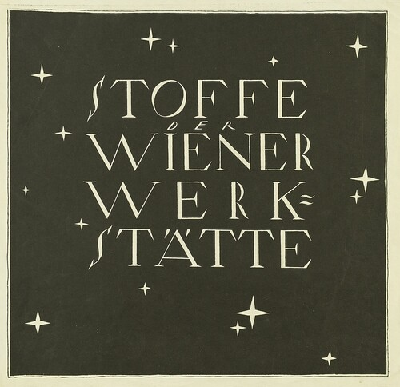

ここを見てみよう。
暗い地に、明るい文字と星のような模様が広がっています。文字の形も装飾の一部になっています。
本文公開・実作品画像1点／画像の収録は継続中
制作・販売を行った工房組織
Wiener Werkstätte
ウィーン工房は、暮らしのいろいろな物をつくった集まりです。
器や家具だけでなく、布や服、印刷物にも取り組みました。
形を考える人と、材料を使ってつくる職人の仕事を結び付けました。
四角い形が目立つ物もあれば、自然の形を生かした飾りの多い物もあります。
実作品を見る

画像を表示できませんでした。下の出典ページで確認できます。
ダゴベルト・ペッヒェ / 1914年
布そのものではなく、ウィーン工房の布地を宣伝するポスターです。
暗い地に、明るい文字と星のような模様が広がっています。文字の形も装飾の一部になっています。
ダゴベルト・ペッヒェ《ウィーン工房の布地を宣伝するポスター》、1914年。ハンブルク美術工芸博物館、EP2014.898。Public Domain Mark 1.0。
出典で作品・資料を見る ↗Public Domain Mark 1.0
所蔵館は原作品をパブリックドメインとして公開しています。
所蔵館が、この画像をPublic Domain Mark 1.0で公開しています。
配信された原画像を無加工で保持しています。
所蔵館による個別の指定に基づきます。すべての国での権利保証や、所蔵館の推奨を意味しません。
出典先の原画像を開く ↗画像の利用条件 ↗作品の知名度や画像の入手しやすさだけで選びません。紹介したい作品と、調べて分かったことをまとめました。画像を載せられるかどうかは、別に確かめています。画像の利用許諾を確認できていないものは掲載していません。
初期の金属工芸、飾りのある壁紙、二つの世界大戦の間の時期の陶芸、活動をまとめた出版物という4つの役割から選びました。建築・服飾・家具を含むすべての分野をカバーしたわけではありません。代表画像セットも、完成を意味するものではありません。
原題：Small Fruit Basket
金属の板に穴を開け、格子のようにした器です。
似た形でも、銀を使うか、白くぬった鉄を使うかで、値段も違いました。
金工・生活の器
穴をあけて格子状にした器を、材料、用途、売り方の関係から見る例です。工房の金属製品には、銀だけでなく、白く塗った鉄板の物もありました。似た形でも、材料や価格は異なりました。
この個体は銀製で、5.4×16.4×16.4cmです。2017年は収蔵した年で、制作年ではありません。同館が説明する鉄板製の別製品や、模様の違う製品を、この個体の材料や状態と混同しません。画像はまだ実際に見ていません。
自然をもとにした飾りを使う壁紙です。
工房の外で製造する人とも、仕事を分けてつくられました。
室内装飾・壁紙・外部製造
Pecheの自然をもとにした飾りを、創設者たちの図形を使った表現と比べる候補です。壁紙では、設計が物の表面から部屋全体へ広がります。工房の外の製造者との分担にも注目します。
MAKはModeldruck（版による印刷）と記録しています。工房の名前がついていても、内部の職人だけで製造したとは限りません。個々の模様の細部は、画像を実際に見てから説明します。
原題：Flora
1928年にウィーン工房でつくられた焼き物です。
初めのころの金属の格子とは違う表し方も、工房にはありました。
陶芸・人物彫刻
金属の格子だけではわからない、二つの世界大戦の間の表情豊かな陶芸を示す候補です。MAKは、この作品が1928年にWWで作られたと明記しています。
赤い陶土に、複数の色の釉薬（ゆうやく）をかけています。取得した資料には、個体番号の記載がありません。米国へ移住した後の作品や、独立した工房の時期の暖炉と、同じ製造条件とは考えません。写真は©MAK/Georg Mayerで、未取得です。
原題：Die Wiener Werkstätte 1903–1928. Modernes Kunstgewerbe und sein Weg
工房の活動をまとめた本です。
中のページと、外側のつくりでは、担当した人が違います。
記念出版・グラフィックと装丁
作品を並べるだけでなく、自分たちの活動を出版物にまとめる仕事を見ます。誌面と立体的な装丁（そうてい、本の外側の設計）を、それぞれ別の制作者の仕事として比べられます。
題名の1903〜1928は、取り上げた期間です。出版した1929年とは区別します。紹介された1ページだけで、本全体を一人の著作とは断定しません。装丁の材料は、写真説明で「陶土」に見える表現ではなく、材料欄のPapier-mâché（張り子）を採用しています。具体的な版・ページ・所蔵番号は、まだ照合していません。
ポスター
暗い地に、明るい文字と星のような模様が広がっています。文字の形も装飾の一部になっています。
作品・資料の出典を見る ↗原題：Stoffe der Wiener Werkstätte
ダゴベルト・ペッヒェ / 1914年 / ポスター
布そのものではなく、ウィーン工房の布地を宣伝するポスターです。
生活の道具から、部屋、布、服、印刷物まで。ウィーン工房は、暮らしのさまざまな物を設計した制作組織です。展覧会を行うウィーン分離派と深い関係がありますが、同じ組織ではありません。初期の丸・四角を使った金属製品だけでなく、飾り豊かな布や陶芸も見ていきます。
ホフマン（Hoffmann）、モーザー（Moser）、支援者のヴェルンドルファー（Waerndorfer）が1903年に設立しました。設計と職人の仕事を結び付けましたが、すべての品を同じ工房で手作りしたわけではありません。材料による値段の違いや、外部での製造もありました。1932年までの変化と作り手の違いは、一つの決まった様式では説明できません。
以下は観察のための問いです。すべての作品に共通する固定ルールや、未取得画像の実見結果ではありません。
初期の金属製品の白い塗装や、銀そのものの色を見ます。布・壁紙・陶器の色とは、分けて比べましょう。工房全体に共通する、少数の色の決まりは設定しません。
商品の広告や記念の出版物では、文字が、商品の見せ方や販売、組織の自己紹介にどう関わるかを考えます。一つの決まった書体では判定できません。
初期の穿孔板金（せんこうばんきん：穴を開けた金属の板）の格子と、ペッヒェ（Peche）の自然をもとにした装飾を比べます。丸や四角を使う形だけが、工房に共通する特徴ではありません。
一つの器を見るだけでなく、繰り返す模様、布で作った服、室内や売場への広がりに注目します。設計する人、製造する人、販売する人の役割を分けてたどります。
COMPARE
アーツ・アンド・クラフツ（Arts & Crafts）とは、芸術・生活・制作の関係を考える点で共通する問いがあります。一方、ウィーン分離派（Vienna Secession）は展覧会を行う団体で、ウィーン工房は制作と販売を行う組織です。関わる人が重なっていても、分離派の作品がすべて工房製というわけではありません。バウハウス（Bauhaus）の学校の仕組みや、工業生産を目指す考え方とも区別します。
項目を横に並べる ↗READ TODAY
オーストリア応用美術館（MAK）のペッヒェ展は、後の時代の装飾的なデザインや、ポストモダンとの関係を取り上げています。ただし、工房全体が後の一つの様式へ、そのままつながったという意味ではありません。特定の作り手や作品が、後の人々にどう受け止められたかを比べるための視点です。
名前を開くと、生没年や工房の活動年代、主な仕事、作品と出典を読めます。ここに挙げた人だけで、この項目の全体を説明するものではありません。
Dagobert Peche
建築を学んだ後、工芸やデザインを手がけた人物。自然の形をもとにした豊かな装飾を、家具、金工、布、壁紙、印刷物などへ展開しました。1915年からウィーン工房に加わりました。
壁紙と布地の広告ポスターから、生活の空間と印刷物にまたがる仕事を見られます。
1914年の壁紙。設計はペッヒェ、製造はマックス・シュミットと記録されています。ウィーン工房内部での製造とは区別します。
1914年の布地の広告ポスター。布の見本そのものではありません。
人物の出典：ウィーン応用美術館（MAK） ↗ / ウィーン応用美術館（MAK） ↗ / ハンブルク美術工芸博物館 ↗
Vally Wieselthier
ウィーンに生まれた陶芸家・デザイナー。ウィーン工房で陶の人物像を制作し、布やグラフィックの仕事にも携わりました。1927年から工房の陶芸制作を率い、後には米国でも活動しました。
《フローラ》と記念出版物の外装は、異なる材料を使った仕事です。張り子の装丁を陶製とは扱いません。
1928年にウィーン工房で制作された陶の人物像。後の米国での作品とは区別します。参照した展示資料には所蔵番号の記載がありません。
題名の1903〜1928は対象期間で、展示資料はこの出版物を1929年としています。フレーグルの誌面とヴィーゼルティーアの張り子の装丁は、別の担当です。
人物の出典：ウィーン応用美術館（MAK） ↗ / ウィーン応用美術館（MAK） ↗ / ウィーン応用美術館（MAK） ↗
Mathilde Flögl
ブルノに生まれた工芸家・グラフィックデザイナー・教育者。ウィーン工房で、布や壁紙、革製品、印刷物など幅広い仕事を担いました。工房の記念出版物では、誌面のデザインに携わりました。
展示で紹介されたページの作者です。外側の張り子の装丁はヴィーゼルティーアの仕事で、本全体の文章を一人で書いたという意味でもありません。
展示資料が示す出版物の年は1929年。MAKの略歴は、記念出版物のグラフィックデザインを1928年の仕事として記録しています。誌面の設計と出版物の年を区別します。
人物の出典：ウィーン応用美術館（MAK） ↗ / ウィーン応用美術館（MAK） ↗ / ウィーン応用美術館（MAK） ↗
Koloman Moser
ウィーンの画家・デザイナー。分離派の創設に参加し、ポスター、家具、展示空間などを手がけました。ホフマンらとウィーン工房も創設し、平面の装飾と暮らしの道具の両方を設計しました。
分離派での印刷物や家具の仕事に加え、ウィーン工房では金属の器も設計しました。ここでは銀の小さな果物かごを取り上げます。
1900年の第8回分離派展に出品された戸棚。モーザーが設計し、ポルトワ＆フィックスが製作しました。
1904年製の銀のかご。白く塗られた鉄板製の別製品ではなく、2017年はこの所蔵品の収蔵年です。
人物の出典：ウィーン・ミュージアム ↗ / ウィーン応用美術館（MAK） ↗ / ウィーン応用美術館（MAK） ↗ / ウィーン分離派 ↗ / レオポルド美術館 ↗ / ウィーン応用美術館（MAK） ↗
Wiener Werkstätte
生活用品や室内のための品を設計・製作したウィーンの組織。ホフマン、モーザー、実業家ヴェルンドルファーが創設し、家具、金工、製本、布など多くの分野に関わりました。
作品ごとに設計者、製作の場所、外部の製造者を区別します。工房名だけで、すべてを同じ人や材料の仕事にはまとめられません。
1904年製の銀のかご。白く塗られた鉄板製の別製品ではなく、2017年はこの所蔵品の収蔵年です。
MAKは、1928年にヴィーゼルティーアがウィーン工房で制作したと記録しています。
工房の出典：ウィーン応用美術館（MAK） ↗ / レオポルド美術館 ↗ / ウィーン応用美術館（MAK） ↗
このページを書くときに使った資料です。作品の説明、画像を入手できたかどうか、画像を使う条件は、それぞれ別に確かめています。検索結果で読んだ情報と、元のページを開いて確かめた情報も、調査の記録で分けています。
この項目の実作品画像は1点、参照・関連画像は0点です。画像の収集は続けています。